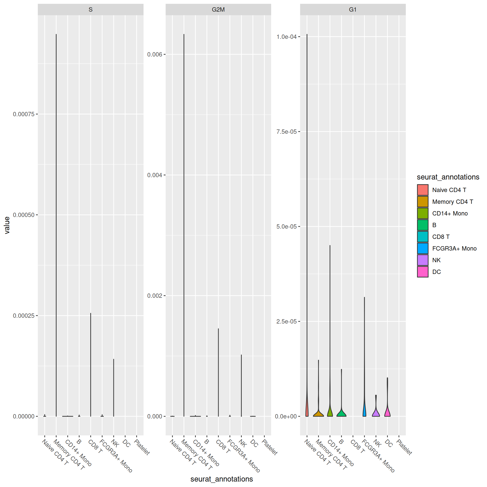
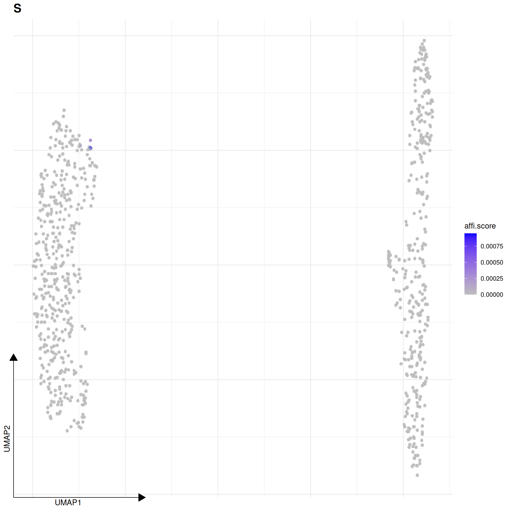
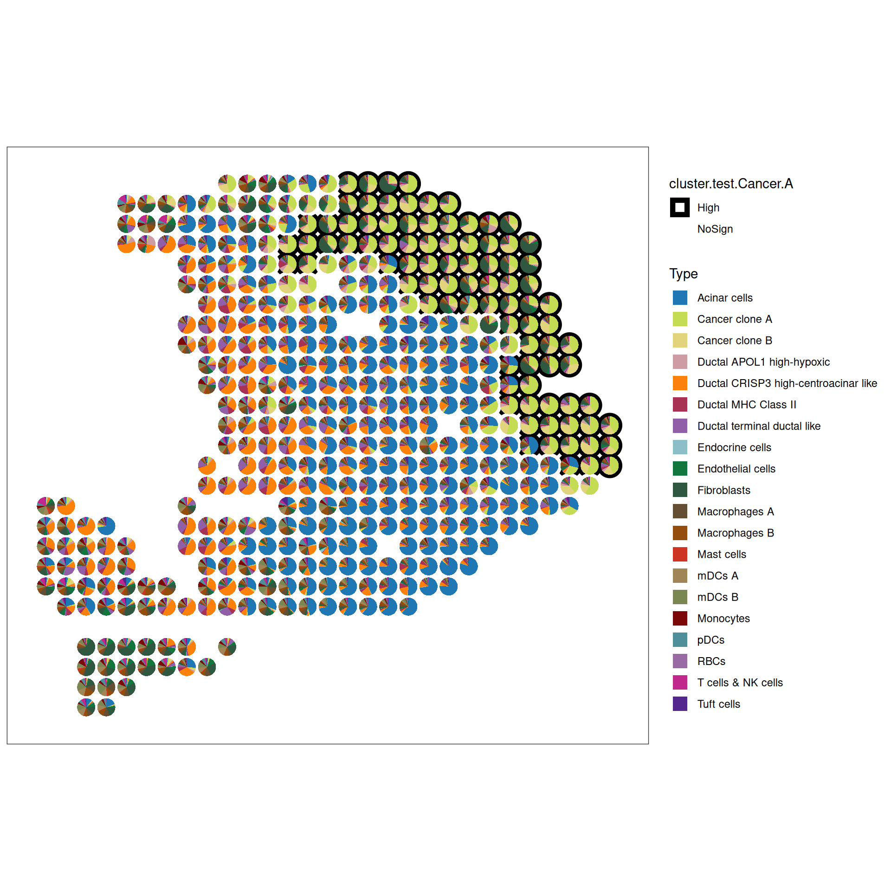
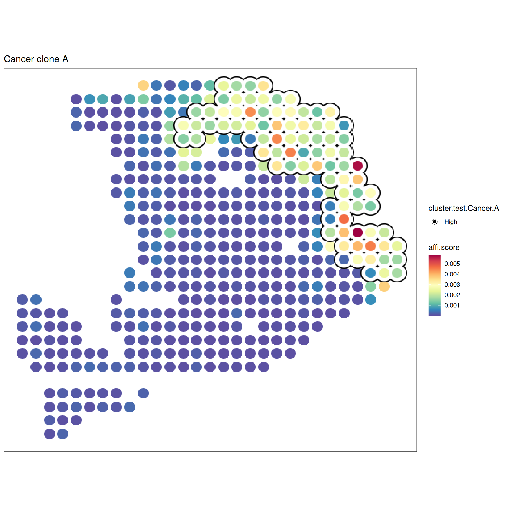
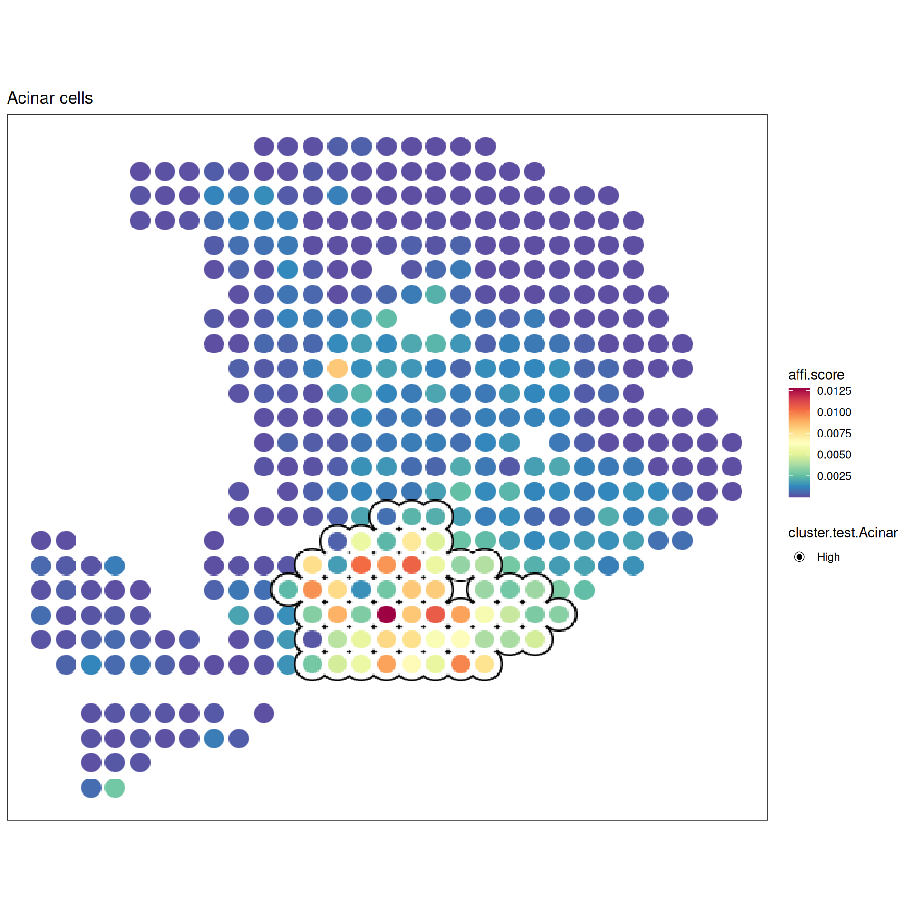
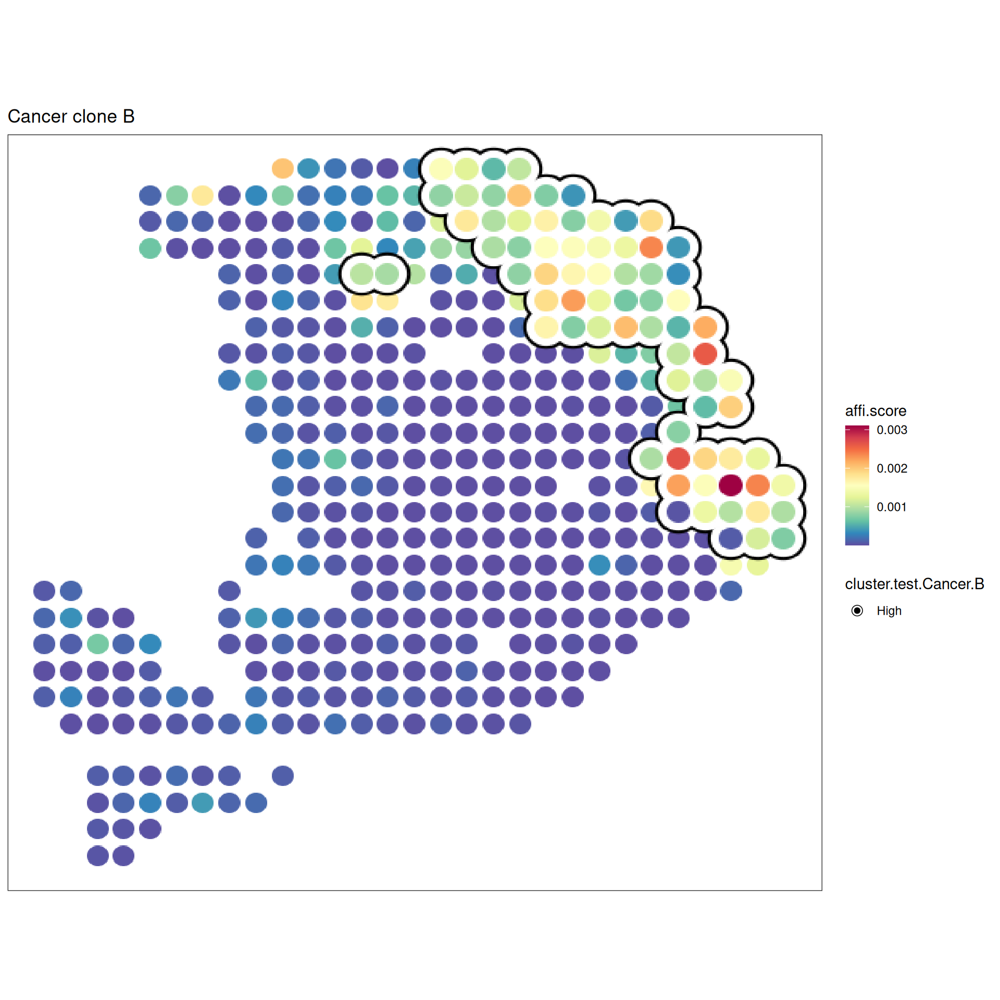

25 SVP: Gene Set Activity in Spatial and Single-Cell Data
Not every downstream analysis begins with cluster markers or differential expression. In many settings, the real question is whether a predefined biological program, pathway, or cell-type signature is active in a given cell or spatial location.
The SVP ecosystem is designed for this use case. This chapter shows how gene set activity can be quantified and explored in both single-cell and spatial settings, using SingleCellExperiment-compatible workflows.
Because the required packages and example datasets are lightweight enough for CI, most chunks in this chapter are executed in the GitHub Actions bookdown workflow when the dependencies are available.
# `conflicted` is attached by the book's setup chunk, and this attach sequence
# brings GenomicRanges (via SVP) into the session alongside generics and base,
# so `library(sclet)` would fail on `intersect` unless one is named. Same
# choice the setup chunk makes.
suppressMessages(library(SpatialExperiment))
suppressMessages(library(SingleCellExperiment))
suppressMessages(library(scuttle))
suppressMessages(library(SVP))
suppressMessages(library(ggplot2))
suppressMessages(library(ggsc))
conflicted::conflicts_prefer(base::intersect, .quiet = TRUE)
library(sclet)25.1 runSGSA
runSGSA() calculates the activity of gene sets in spatial or single-cell data.
sceSubPbmc is a small SingleCellExperiment dataset derived from PBMC3k and contains 1304 genes across 800 randomly selected cells.
data(sceSubPbmc)
sceSubPbmc <- NormalizeData(sceSubPbmc)
# the using runMCA to perform MCA (Multiple Correspondence Analysis)
# this is refer to the CelliD, but we using the Eigen to speed up.
# You can view the help information of runMCA using ?runMCA.
sceSubPbmc <- runMCA(sceSubPbmc, assay.type = 'logcounts')CellCycle.Hs contains cell-cycle-related gene sets. The S and G2M signatures follow the Seurat convention, while the G1 signature is derived from the G1_PHASE human gene set in MSigDB after removing duplicated genes.
# Next, we calculate gene set activity scores.
# Here, we use the cell-cycle signatures, but the same workflow applies
# to KEGG pathways, GO terms, Hallmark collections, transcription factor
# target sets, and other curated gene sets.
data(CellCycle.Hs)
sceSubPbmc <- runSGSA(sceSubPbmc, gset.idx.list = CellCycle.Hs, gsvaExp.name = 'CellCycle')## elapsed time is 0.198000 seconds## elapsed time is 0.008000 seconds## elapsed time is 0.033000 seconds## elapsed time is 0.009000 seconds## elapsed time is 0.007000 seconds## class: SVPExperiment
## dim: 1304 800
## metadata(1): sclet
## assays(2): counts logcounts
## rownames(1304): LYZ GNG7 ... TAF1 TBRG4
## rowData names(0):
## colnames(800): ACGAACTGGCTATG GGGCCAACCTTGGA ...
## TTCAAGCTAAGAAC TTACACACGTGTTG
## colData names(1): seurat_annotations## reducedDimNames(1): MCA
## mainExpName: RNA## altExpNames(0):
## spatialCoords names(0) :
## imgData names(0):
## gsvaExps names(1) : CellCycle## class: SingleCellExperiment
## dim: 3 800
## metadata(0):
## assays(1): affi.score
## rownames(3): S G2M G1
## rowData names(4): exp.gene.num gset.gene.num
## gene.occurrence.rate geneSets
## colnames(800): ACGAACTGGCTATG GGGCCAACCTTGGA ...
## TTCAAGCTAAGAAC TTACACACGTGTTG
## colData names(1): seurat_annotations## reducedDimNames(0):
## mainExpName: NULL## altExpNames(0):## 6 x 3 sparse Matrix of class "dgCMatrix"
## S G2M G1
## ACGAACTGGCTATG . . 0.0001378758
## GGGCCAACCTTGGA . . .
## ACGAGGGACAGGAG . . .
## CAGGTTGAGGATCT . . .
## CATACTTGGGTTAC . . .
## AAGCCATGAACTGC . . .# The resulting scores can then be visualized or used in downstream testing.
sceSubPbmc <- sceSubPbmc |>
scater::runPCA(assay.type = 'logcounts', ntop = 600) |>
scater::runUMAP(dimred = 'PCA')
# withReducedDim = TRUE, the original reducetion results from original gene features
# will be add the colData in the sce.cellcycle.
sce.cellcycle <- sceSubPbmc |> gsvaExp('CellCycle', withReducedDim=TRUE)
sce.cellcycle## class: SingleCellExperiment
## dim: 3 800
## metadata(0):
## assays(1): affi.score
## rownames(3): S G2M G1
## rowData names(4): exp.gene.num gset.gene.num
## gene.occurrence.rate geneSets
## colnames(800): ACGAACTGGCTATG GGGCCAACCTTGGA ...
## TTCAAGCTAAGAAC TTACACACGTGTTG
## colData names(1): seurat_annotations## reducedDimNames(3): MCA PCA UMAP
## mainExpName: NULL## altExpNames(0):sce.cellcycle |> sc_violin(
features = rownames(sce.cellcycle),
mapping = aes(x=seurat_annotations, fill = seurat_annotations)
) +
scale_x_discrete(guide=guide_axis(angle=-45))

suppressMessages(library(scran))
cellcycle.test.res <- sce.cellcycle |> findMarkers(
group = sce.cellcycle$seurat_annotations,
test.type = 'wilcox',
assay.type = 'affi.score',
add.summary = TRUE
)
cellcycle.test.res$B## DataFrame with 3 rows and 16 columns
## self.average other.average self.detected other.detected
## <numeric> <numeric> <numeric> <numeric>
## S 7.13586e-08 5.71980e-06 0.0222222 0.0852919
## G2M 1.16847e-06 2.64256e-05 0.2888889 0.2456323
## G1 3.06983e-07 1.80929e-05 0.0666667 0.2132489
## Top p.value FDR summary.AUC
## <integer> <numeric> <numeric> <numeric>
## S 1 0.00269317 0.00807951 0.325253
## G2M 1 0.04238427 0.04238427 0.591291
## G1 1 0.00558551 0.00837826 0.000000
## AUC.Naive CD4 T AUC.Memory CD4 T AUC.CD14+ Mono
## <numeric> <numeric> <numeric>
## S 0.491141 0.481975 0.500926
## G2M 0.591291 0.542519 0.535764
## G1 0.488138 0.483160 0.469213
## AUC.CD8 T AUC.FCGR3A+ Mono AUC.NK AUC.DC
## <numeric> <numeric> <numeric> <numeric>
## S 0.423529 0.499658 0.325253 0.511111
## G2M 0.564706 0.473504 0.343434 0.609319
## G1 0.533333 0.425812 0.486869 0.483871
## AUC.Platelet
## <numeric>
## S 0.511111
## G2M 0.644444
## G1 0.00000025.2 runLISA
hpda_spe_cell_dec is the result of runSGSA with HPDA A sample from (doi:10.1038/s41587-019-0392-8). Each item in the matrix is the marker gene set activity in the spot. The marker gene set represents the cell type. We can use svp the investigate if a cell type cluters and if two cell types appear in the same region. Usage of local indicators of spatial association (LISA) to identify the hotspot in the spatial space
data(hpda_spe_cell_dec)
# r$> assay(hpda_spe_cell_dec)[1:5,1:5]
# 5 x 5 sparse Matrix of class "dgCMatrix"
# Spot1 Spot2 Spot3 Spot4 Spot5
# Acinar cells 3.283881e-04 6.931743e-06 4.820951e-05 1.882577e-03 9.269843e-04
# Cancer clone A 2.880388e-04 2.013973e-04 9.167013e-05 9.642225e-05 6.704812e-05
# Cancer clone B 1.569730e-04 2.744810e-04 2.151324e-04 1.502651e-05 4.283322e-06
# Ductal APOL1 high-hypoxic 3.132481e-05 3.902286e-04 4.240874e-05 3.140970e-06 1.464118e-04
# Ductal CRISP3 high-centroacinar like 9.546611e-05 5.025320e-03 2.112512e-03 1.140155e-03 3.873088e-03
svres <- runDetectSVG(hpda_spe_cell_dec, assay.type = 'affi.score',
method = 'moransi', action = 'only') ## elapsed time is 0.038000 seconds# r$> svres |> dplyr::arrange(rank) |> head()
# obs expect.moransi sd.moransi Z.moransi pvalue padj rank
# Cancer clone A 0.7086916 -0.00234192 0.02803920 25.35855 3.616015e-142 7.232030e-141 1
# Acinar cells 0.6958980 -0.00234192 0.02788076 25.04379 1.020141e-138 1.020141e-137 2
# Cancer clone B 0.6586104 -0.00234192 0.02803039 23.57985 3.102650e-123 2.068434e-122 3
# mDCs A 0.5824019 -0.00234192 0.02760394 21.18334 6.801396e-100 3.400698e-99 4
# Ductal CRISP3 high-centroacinar like 0.5605955 -0.00234192 0.02794187 20.14673 1.437344e-90 5.749375e-90 5
# Endothelial cells 0.5362475 -0.00234192 0.02757573 19.53128 2.976221e-85 9.920735e-85 6lisa.res12 <- hpda_spe_cell_dec |>
runLISA(
features = c(1, 2, 3),
assay.type = 'affi.score',
weight.method = "knn",
k = 10,
action = 'get',
)
lisa.res12## List of length 3
## names(3): Acinar cells Cancer clone A Cancer clone B## Gi E.Gi Var.Gi Z.Gi
## Spot1 0.0003594390 0.00234192 1.553580e-06 -1.5905315
## Spot2 0.0009293147 0.00234192 1.551111e-06 -1.1342257
## Spot3 0.0010726076 0.00234192 1.551438e-06 -1.0190641
## Spot4 0.0009029930 0.00234192 1.563140e-06 -1.1509064
## Spot5 0.0011642594 0.00234192 1.557730e-06 -0.9435702
## Spot6 0.0008351924 0.00234192 1.551895e-06 -1.2094939
## Pr (z != E(Gi)) padj cluster.no.test
## Spot1 0.1117150 0.2899315 Low
## Spot2 0.2566999 0.4009765 Low
## Spot3 0.3081725 0.4575251 Low
## Spot4 0.2497708 0.3944719 Low
## Spot5 0.3453893 0.4877258 Low
## Spot6 0.2264732 0.3702157 Low
## cluster.test
## Spot1 NoSign
## Spot2 NoSign
## Spot3 NoSign
## Spot4 NoSign
## Spot5 NoSign
## Spot6 NoSign## Gi E.Gi Var.Gi Z.Gi
## Spot1 0.0004249351 0.00234192 1.394101e-06 -1.623573
## Spot2 0.0003356962 0.00234192 1.393067e-06 -1.699783
## Spot3 0.0004122264 0.00234192 1.391701e-06 -1.635745
## Spot4 0.0004537437 0.00234192 1.391761e-06 -1.600517
## Spot5 0.0004554667 0.00234192 1.391386e-06 -1.599272
## Spot6 0.0006432991 0.00234192 1.393284e-06 -1.439053
## Pr (z != E(Gi)) padj cluster.no.test
## Spot1 0.10446707 0.1596854 Low
## Spot2 0.08917177 0.1576365 Low
## Spot3 0.10189306 0.1588720 Low
## Spot4 0.10948398 0.1619337 Low
## Spot5 0.10976015 0.1619337 Low
## Spot6 0.15013551 0.1947212 Low
## cluster.test
## Spot1 NoSign
## Spot2 NoSign
## Spot3 NoSign
## Spot4 NoSign
## Spot5 NoSign
## Spot6 NoSigncolData(hpda_spe_cell_dec)$`cluster.test.Cancer.A` <- lisa.res12[["Cancer clone A"]] |>
dplyr::pull(cluster.test)
colData(hpda_spe_cell_dec)$`cluster.test.Acinar` <- lisa.res12[["Acinar cells"]] |>
dplyr::pull(cluster.test)
colData(hpda_spe_cell_dec)$`cluster.test.Cancer.B` <- lisa.res12[["Cancer clone B"]] |>
dplyr::pull(cluster.test)p1 <- sc_spatial(hpda_spe_cell_dec,
features = rownames(hpda_spe_cell_dec),
mapping = aes(x=x, y=y, color=cluster.test.Cancer.A),
plot.pie = T,
pie.radius.scale = .8,
bg_circle_radius = 1.1,
color=NA,
linewidth=2
) + scale_color_manual(values=c("black", "white"))
p1
f1 <- sc_spatial(hpda_spe_cell_dec, features="Cancer clone A",
mapping=aes(x = x, y = y),
pointsize=10) +
geom_scattermore2(mapping = aes(bg_color=cluster.test.Cancer.A,
subset=cluster.test.Cancer.A=="High"),
bg_line_width = .16,
gap_line_width = .14,
pointsize = 7) +
scale_bg_color_manual(values=c('black'))
f1
f2 <- sc_spatial(hpda_spe_cell_dec, features="Acinar cells",
mapping=aes(x=x,y=y),
pointsize=10) +
geom_scattermore2(mapping = aes(bg_color=cluster.test.Acinar, subset=cluster.test.Acinar=="High"),
bg_line_width = .16,
gap_line_width = .14,
pointsize = 7) +
scale_bg_color_manual(values=c('black'))
f2
f3 <- sc_spatial(hpda_spe_cell_dec, features="Cancer clone B",
mapping=aes(x=x,y=y),
pointsize=10) +
geom_scattermore2(mapping = aes(bg_color=cluster.test.Cancer.B, subset=cluster.test.Cancer.B=="High"),
bg_line_width = .18,
gap_line_width = .14,
pointsize = 8) +
scale_bg_color_manual(values=c('black'))
f3
25.3 runLOCALBV
explore the local bivariate relationship in the spatial space.
res1 <- hpda_spe_cell_dec |> runLOCALBV(
features1 = 'Cancer clone A',
features2 = 'Cancer clone B',
assay.type='affi.score'
)
res1## List of length 1
## names(1): Cancer clone A_VS_Cancer clone B## LocalLee Gi E.Gi Var.Gi
## Spot1 0.2656572 0.0007993283 0.00234192 1.685012e-06
## Spot2 0.1928726 0.0006520670 0.00234192 3.060135e-06
## Spot3 0.2098906 0.0007134499 0.00234192 2.544445e-06
## Spot4 0.2609793 0.0007131499 0.00234192 2.545557e-06
## Spot5 0.1769749 0.0007300670 0.00234192 3.059710e-06
## Spot6 0.1736672 0.0004656579 0.00234192 2.175086e-06
## Z.Gi Pr (z > E(Gi)) padj cluster.no.test
## Spot1 -1.1883644 0.8826551 0.9173222 Low
## Spot2 -0.9660035 0.8329788 0.9173222 Low
## Spot3 -1.0209003 0.8463492 0.9173222 Low
## Spot4 -1.0208654 0.8463409 0.9173222 Low
## Spot5 -0.9214789 0.8215998 0.9173222 Low
## Spot6 -1.2721999 0.8983489 0.9173222 Low
## cluster.test
## Spot1 NoSign
## Spot2 NoSign
## Spot3 NoSign
## Spot4 NoSign
## Spot5 NoSign
## Spot6 NoSign# LocalLee Gi E.Gi Var.Gi Z.Gi Pr (z > E(Gi)) cluster.no.test cluster.test
# Spot1 0.2656572 0.0007993283 0.00234192 1.685012e-06 -1.1883644 0.8826551 Low NoSign
# Spot2 0.1928726 0.0006520670 0.00234192 3.060135e-06 -0.9660035 0.8329788 Low NoSign
# Spot3 0.2098906 0.0007134499 0.00234192 2.544445e-06 -1.0209003 0.8463492 Low NoSign
# Spot4 0.2609793 0.0007131499 0.00234192 2.545557e-06 -1.0208654 0.8463409 Low NoSign
# Spot5 0.1769749 0.0007300670 0.00234192 3.059710e-06 -0.9214789 0.8215998 Low NoSign
# Spot6 0.1736672 0.0004656579 0.00234192 2.175086e-06 -1.2721999 0.8983489 Low NoSignThere are two ways to reach the AI layer, and this part treats them as two routes into the same engine.
- External agent driving. A general-purpose coding agent runs in the user’s own session, inspects the object through exported functions, plans a set of actions, and executes them through the package. This is the book’s mainline route: it needs no in-package model, keeps the conversation in the user’s own tooling, and is the route an experienced user can inspect step by step.
- In-package assistant. The package itself talks to a model through
aisdk, plans, asks for clarification, and executes. It is the lower-friction route: less setup and less control, and it needs a configured model.
Both routes end in the same place, which is the principle this part keeps returning to: the engine is the authority, not the model. A model may propose an analysis, but it does not perform one. Plans are validated against the live object, confirmation is carried by a token minted for that exact plan, execution walks the plan one action at a time, and results are recorded so that a report can be recomputed from the ledger rather than retold from the conversation. When a plan is illegal, the engine refuses it; when a step cannot run, the failure is recorded as a failure.
The chapters therefore read in one direction: the one-call route first, then the concepts, then the driving route, then the in-package route, and finally the governance layer that keeps claims tied to the evidence actually recorded.
If you have five minutes, read AI in One Call and stop. It is two commands and it is the whole user-facing surface for a first-time user.